Машина для встряхивания порошка
Полное руководство по установке, эксплуатации и обслуживанию оборудования ADL07K10.
☞ Пожалуйста, внимательно прочтите данное руководство перед началом работы и сохраните его для дальнейшего использования.
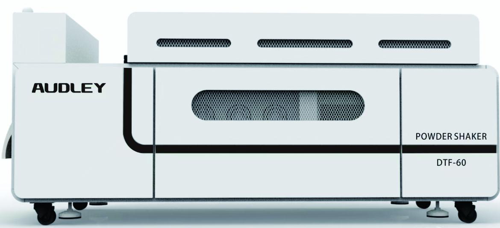
Предисловие
Благодарим вас за выбор нашего оборудования. Для полного понимания характеристик данного продукта и его безопасного использования, обязательно внимательно прочтите настоящее руководство.
Содержание данного руководства и параметры продукта могут быть изменены без предварительного уведомления. При возникновении вопросов обращайтесь к квалифицированному техническому персоналу.
Храните руководство в надёжном месте. Не допускайте детей и неквалифицированный персонал к оборудованию.
Условные обозначения
Игнорирование данного знака может привести к серьёзной травме оператора.
Игнорирование данного знака может привести к травме оператора или повреждению оборудования.
Требования к установке
Запрещается устанавливать оборудование вблизи летучих растворителей (спирт, разбавители). Запрещается размещать посторонние предметы на корпусе машины.
Не устанавливайте машину в наклонном положении или в месте с вибрацией — это может привести к опрокидыванию или повреждению устройства.
Избегайте использования машины в следующих условиях:
- Чрезмерно влажные или сухие помещения
- Прямые солнечные лучи
- Высокая температура окружающей среды
- Вблизи открытого огня или источников влаги
Электробезопасность
При повреждении кабеля питания немедленно отключите его от сети. Через повреждённые участки возможна утечка тока, что может привести к пожару или короткому замыканию.
- Не касайтесь выключателей мокрыми руками — опасность поражения электрическим током.
- Не подключайте несколько устройств к одной розетке — возможно короткое замыкание или пожар.
- Не скручивайте и не перегибайте кабель питания.
Обязательно подключите провод заземления к клемме электропитания или заземляющему контуру. Запрещается подключать заземление к водопроводным, газовым трубам, телефонным линиям или молниеотводам.
Безопасность при эксплуатации
- Не разбирайте и не ремонтируйте устройство самостоятельно.
- При появлении шума, дыма, пламени или неприятного запаха — немедленно отключите питание и обратитесь к производителю.
- Не используйте легковоспламеняющиеся предметы вблизи оборудования.
- Перед перемещением устройства отключите его от электросети.
- При транспортировке убедитесь, что печатающая головка находится в начальной позиции.
Техническое обслуживание
Перед чисткой обязательно выключите питание и отсоедините кабель от сети. Протирайте машину тканью, смоченной чистящим раствором. Не используйте летучие растворители (спирт и т.п.).
Главный интерфейс
Главный интерфейс используется для переключения рабочего режима между ручным и автоматическим, а также для управления намоткой, сетчатой лентой, всасыванием, подсыпкой и встряхиванием порошка.
При переключении с ручного на автоматический режим все функции включаются по умолчанию. В автоматическом режиме ряд функций управляется датчиком обнаружения плёнки: намотка, сетчатая лента и встряхивание порошка автоматически включаются и выключаются в зависимости от наличия плёнки. Всасывание не отключается автоматически. Подсыпка порошка регулируется по весу порошка.
Панель нагрева
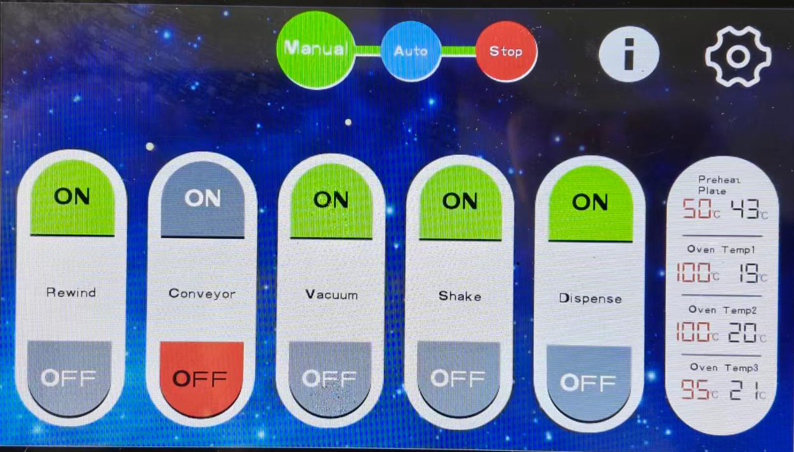
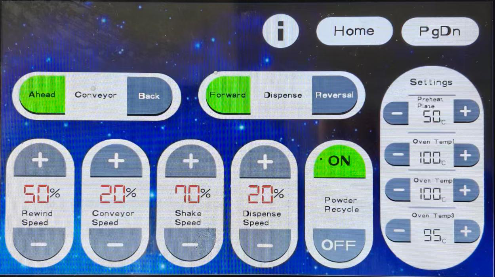
Возврат порошка: Переключатель автоматического возврата порошка. После отключения автоматический возврат не работает.
Направление ленты: Управление направлением вращения сетчатой ленты (вперёд/назад). По умолчанию — вперёд.
Подсыпка порошка: Управление направлением вращения вала порошка (прямое/обратное). Используется для устранения посторонних предметов. По умолчанию — прямое вращение.
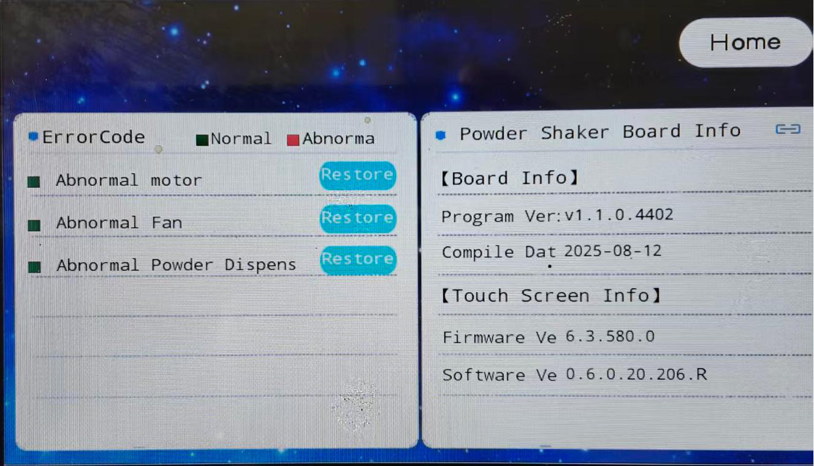
Настройка температуры используется для регулировки параметров нагрева передней направляющей и зон сушки 1, 2, 3. Зона сушки 1 недоступна для двухголовочной машины.
| Зона | 2 головки | 4 головки | 6 головок |
|---|---|---|---|
| Передняя направляющая | 50 ℃ | 60 ℃ | 60–80 ℃ |
| Зона сушки 1 | 60 ℃ | 70–80 ℃ | 80–100 ℃ |
| Зона сушки 2 | 90 ℃ | 90–120 ℃ | 120–140 ℃ |
| Зона сушки 3 | 90 ℃ | 90–120 ℃ | 120–140 ℃ |
Температуру можно увеличивать или уменьшать в зависимости от фактических условий работы.
Информационный интерфейс
Перегрузка мотора / Перегрузка вентилятора / Тайм-аут подачи порошка: В нормальном режиме индикатор горит тёмно-зелёным. При ошибке индикатор становится красным. Для сброса сигнала нажмите кнопку восстановления.
Информация о плате управления и сенсорном экране: Отображает версию прошивки и дату сборки для идентификации версии.
Статус датчиков
- IN1 — Защитный кожух: Отображается автоматически, ручная настройка невозможна.
- IN2 — Фотоэлемент перемотки: Отображается автоматически, ручная настройка невозможна.
- IN3 — Датчик плёнки: Отображается автоматически, ручная настройка невозможна.
- IN4 — Датчик приближения: Отображается автоматически, ручная настройка невозможна.
- IN5 — Переключатель сушки: Отображается автоматически, ручная настройка невозможна.
Передняя направляющая
После распаковки машины необходимо открыть левую и правую дверцы корпуса и отрегулировать фиксированное положение передней направляющей. Регулировка одинакова с обеих сторон машины.
Переключатели
- Главный выключатель: Управляет контактором питания для включения и выключения всей цепи.
- Кнопка аварийной остановки: Мгновенно отключает питание всей машины в экстренной ситуации.
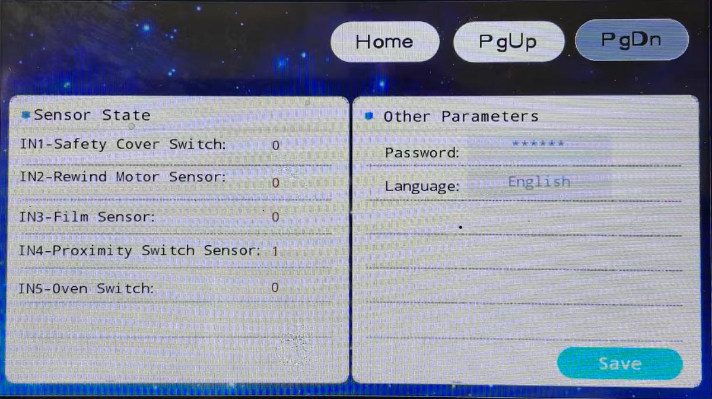
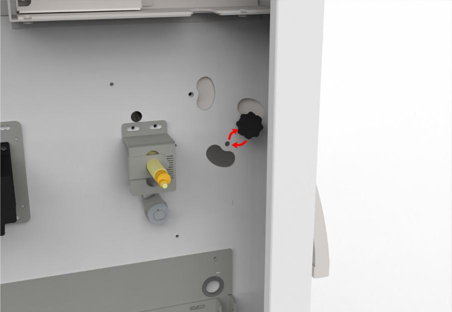
- В средней зоне с LED-подсветкой расположены три направляющих вала из нержавеющей стали для проведения термотрансферной плёнки. Схему заправки см. в разделе «Схема заправки плёнки».
- Переключатель LED-подсветки (зелёный круг справа) — используется для наблюдения за качеством печати и загрузки/выгрузки материалов.
- Вентиляторы охлаждения — расположены за защитными сетками, охлаждают внутреннюю часть корпуса и термотрансферную плёнку.
- Жёлтый рулон — используется для намотки отпечатанной термотрансферной плёнки. Переключатель направления перемотки расположен под зелёным индикатором справа.
Защита дверец
- Дверца зоны встряхивания: При открытии дверцы мотор встряхивания автоматически останавливается. Работа возобновляется только после закрытия дверцы.
- Защита лотка подачи порошка: При открытии верхней крышки мотор распределения порошка автоматически останавливается. Работа возобновляется только после закрытия заслонки.
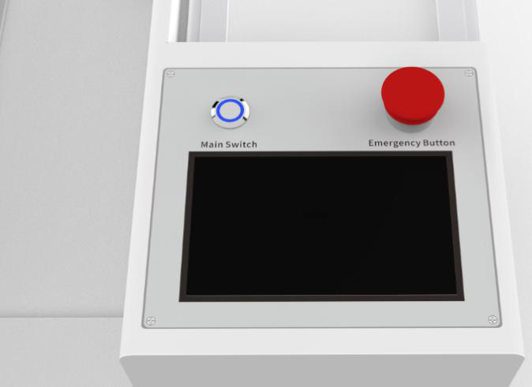
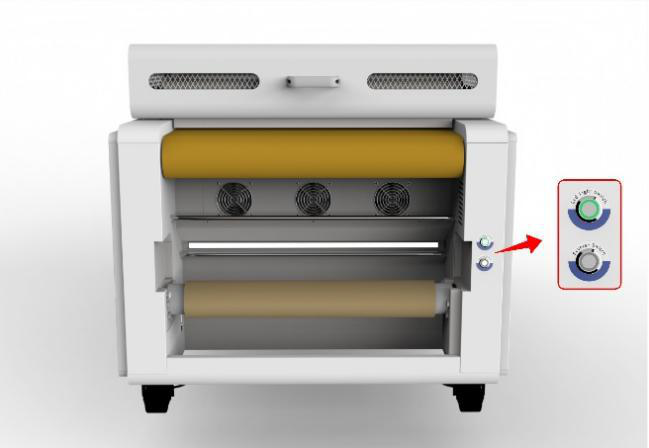
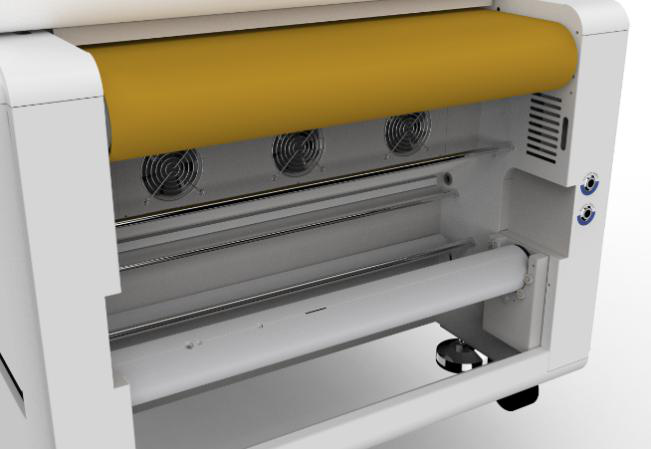
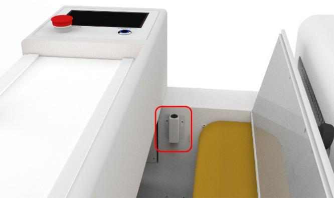
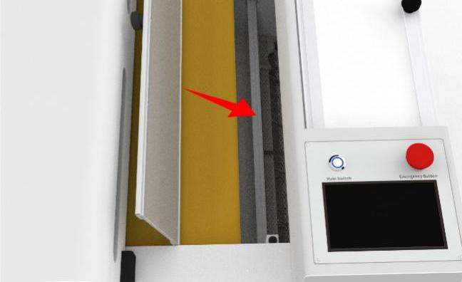
Фотоэлектрический датчик
Определяет наличие термотрансферной плёнки. Управляет мотором встряхивания, сетчатой лентой, очистителем и нагревом печи.
- Мотор встряхивания: Если датчик не обнаруживает плёнку в течение 10 секунд, мотор встряхивания останавливается.
- Сетчатая лента: При отсутствии плёнки лента останавливается немедленно. При обнаружении плёнки лента и мотор встряхивания запускаются с задержкой 1 секунда.
- Нагрев печи: Если плёнка не обнаружена, нагрев и очиститель отключаются через 5 минут.
Датчик приближения
Используется для контроля количества порошка.
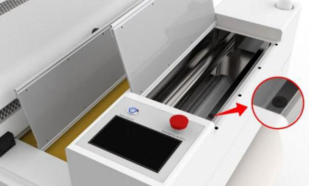
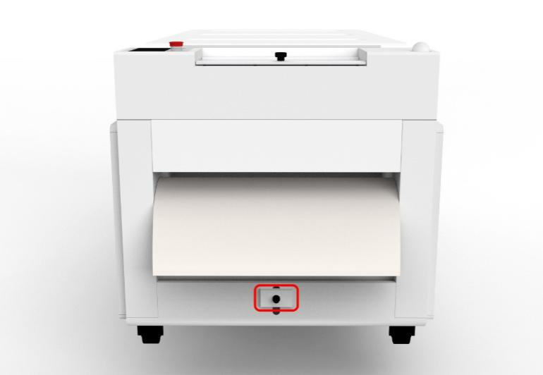
Если позиция металлического указателя сдвинута на одно деление выше или ниже отметки 5, количество порошка существенно не изменяется. При позиции 5 на плёнку попадает примерно 500–600 грамм порошка.
Если указатель установлен слишком низко, порошок будет подаваться непрерывно без остановки, и загорится красный индикатор аварии (срабатывает каждые 5 минут). Время индикации можно настроить в параметрах. Не рекомендуется устанавливать более 5 минут.
Позиция указателя не должна быть ниже 3. Если значение меньше 3, количество порошка будет недостаточным, и на некоторых участках изображения порошок может отсутствовать.
Регулировка заслонки порошка
Крепления плёнки (синий квадрат) — это конструкция для термотрансферной плёнки и порошка, регулировка не требуется. Стрелки в красном кружке позволяют регулировать заслонку порошка. После отпускания заслонка автоматически фиксируется.
Очиститель воздуха
Очиститель использует электростатическое разделение, металлическую сетку, активированный уголь и HEPA-фильтр для четырёхступенчатой очистки воздуха. Срок службы угольного и HEPA-фильтров зависит от условий эксплуатации. Регулярно очищайте фильтры и заменяйте расходные материалы по мере необходимости. При наличии вытяжки на улицу частота замены снижается.
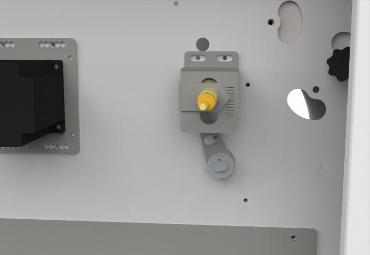
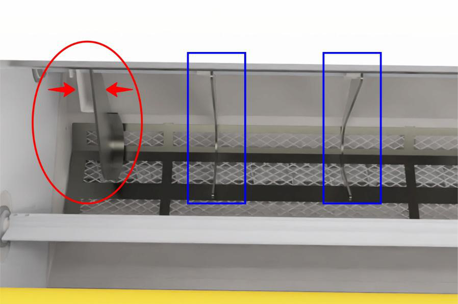
Ниже представлена схема заправки термотрансферной плёнки через направляющие валы машины. Следуйте указанному порядку при установке нового рулона.
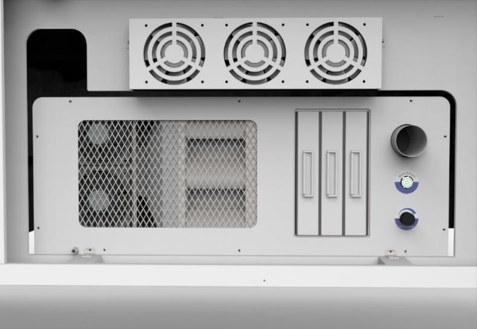
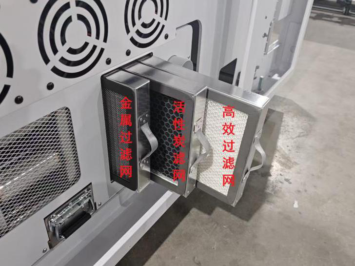
Ежедневное обслуживание
- Регулярно очищайте поверхность машины от пыли и остатков порошка.
- Проверяйте и очищайте фильтры очистителя воздуха.
- Проверяйте натяжение сетчатой ленты и состояние направляющих валов.
- Контролируйте уровень порошка в лотке подачи.
Периодическое обслуживание
- Заменяйте активированный уголь и HEPA-фильтр по мере снижения эффективности очистки.
- Проверяйте состояние кабелей питания и соединений.
- Смазывайте подвижные части (направляющие, валы) согласно графику.
| Неисправность | Возможная причина и решение |
|---|---|
| Порошок не прилипает к плёнке | 1. Проверьте температуру передней направляющей и зон сушки. 2. Убедитесь, что гибкость порошка соответствует типу плёнки. 3. Проверьте качество печати — достаточно ли чернил на плёнке. |
| Порошок сыпется непрерывно | 1. Проверьте позицию указателя датчика приближения (должна быть не ниже 3). 2. Проверьте работоспособность датчика приближения. 3. Убедитесь, что заслонка порошка правильно закрыта. |
| Сетчатая лента не движется | 1. Проверьте, обнаруживает ли фотоэлектрический датчик плёнку. 2. Проверьте подключение мотора сетчатой ленты. 3. Убедитесь, что машина находится в автоматическом режиме. |
| Машина не включается | 1. Проверьте подключение кабеля питания и напряжение сети. 2. Убедитесь, что кнопка аварийной остановки не нажата. 3. Проверьте главный выключатель питания. |
| Перегрев оборудования | 1. Проверьте работу вентиляторов охлаждения. 2. Убедитесь, что заданные температуры не превышают рекомендуемые значения. 3. Проверьте, не заблокированы ли вентиляционные отверстия. |
| Горит красный индикатор | 1. Проверьте, не возникла ли перегрузка мотора. 2. Проверьте тайм-аут подачи порошка. 3. Нажмите кнопку сброса для устранения сигнала тревоги. |
Система контроля температуры использует датчики PT100 для точного измерения температуры в каждой зоне нагрева. Датчик PT100 работает по принципу изменения сопротивления платины при изменении температуры.
Сервисная информация
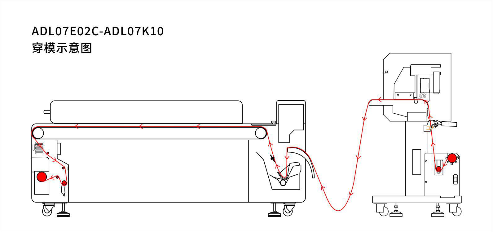
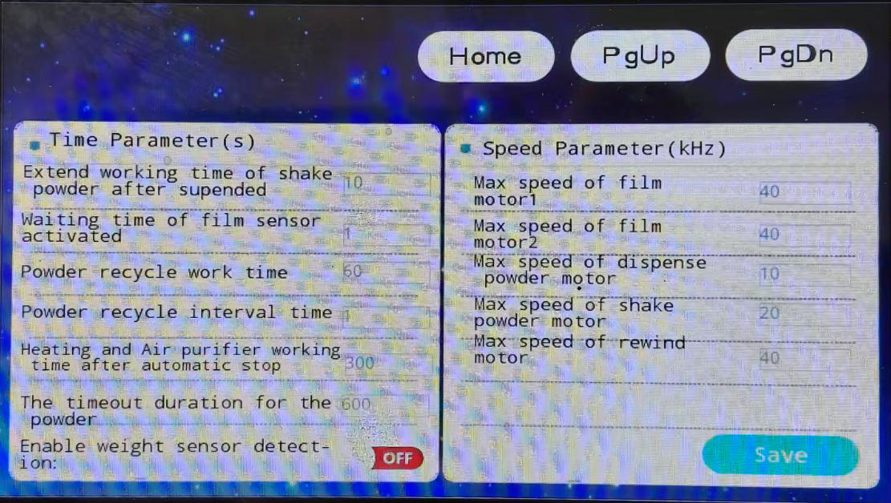
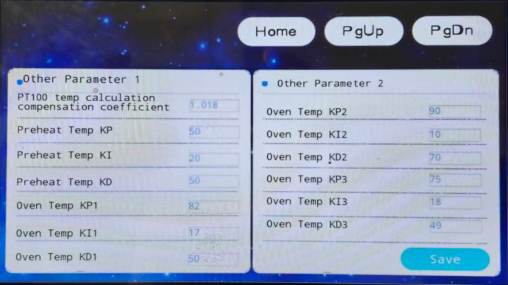
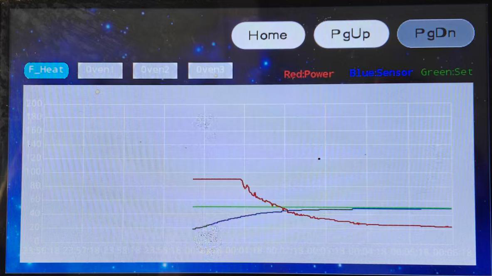